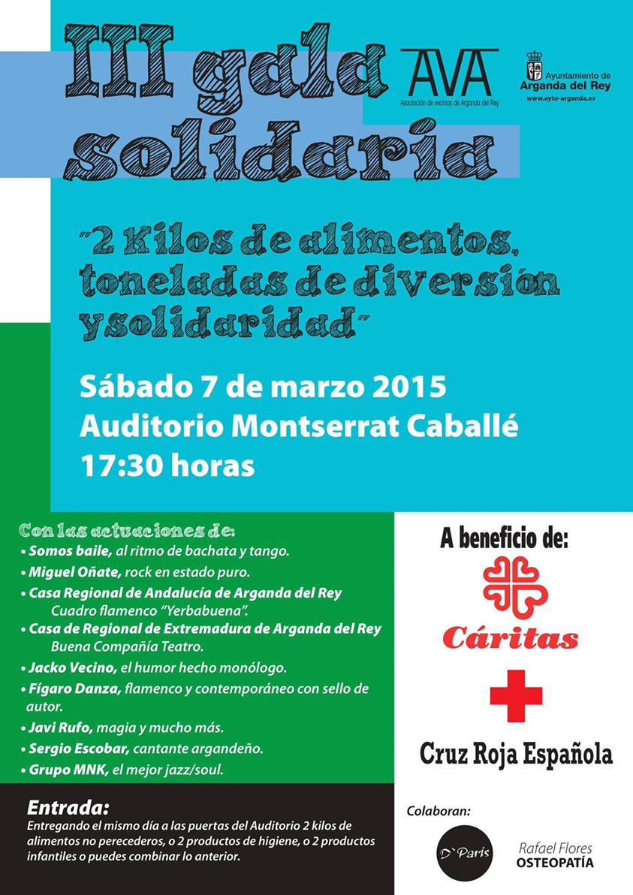
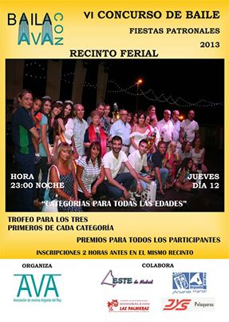
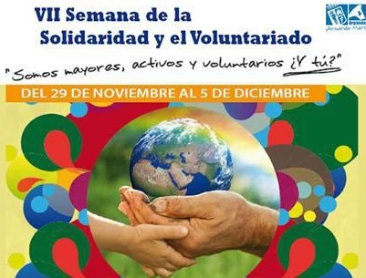

Premio Mujer de Arganda (Sábado 28 Marzo, 13:00H, en el Centro Integrado de la Poveda)
Publicado en el 26 Marzo, 2015.
La Asociación de Vecinos de Arganda del Rey (AVA) en colaboración con el Ayuntamiento de nuestra localidad, y dentro de los actos programados desde el Consejo de la Mujer de Arganda del Rey, os invita a acudir a la entrega del “Premio Mujer de Arganda” en la que ya es su Décima Edición el próximo día 28 de Marzo a las 13:00h en el Centro Integrado de la Poveda.
El acto consistirá en el homenaje al Colectivo Premiado, la UNIDAD DE SEGURIDAD CIUDADANA SECCIÓN APOYO A MUJER DE POLICÍA LOCAL (UNIDAD DE MUJER DE ARGANDA DEL REY) dada su extraordinaria labor en la asistencia, seguimiento, acompañamiento, asesoramiento y actuación integral en pro de las mujeres víctimas de violencia de género, así como por el trabajo que realiza para erradicación de esta lacra social por medio de actuaciones formativas y educacionales. Esta Unidad desde su creación se ha implicado hasta el extremo no solo en hacer lo que su trabajo requería si no mucho más, consiguiendo generar en las víctimas de violencia machista seguridad, confianza, comprensión, fuerza..Un intachable trabajo, magistralmente realizado, que merece una continuidad. Por ello la entrega de este galardón, no solo como reconocimiento a sus méritos pasados, si no a los presentes y deseando que a los futuros.
Será un acto popular en el que además se obsequiará a todos los asistentes con un aperitivo, esperamos vuestra asistencia.
Mónica García crespo Presidenta AVAIII Gala Solidaria
Publicado en el 5 Marzo, 2015
El sábado 7 de marzo a las 17.30 horas en el Auditorio Monserrat Caballé, la Asociación de Vecinos de Arganda llevará a cabo en colaboración con el ayuntamiento de Arganda la III Gala Solidaria «Kilos de Ilusión». Objetivo conseguir la mayor cantidad de alimentos no perecederos, productos de higiene e infantiles posibles, a favor de Cáritas y Cruz Roja Arganda. A cambio, os ofrecemos un espectáculo fantástico de la mano de los mejores profesionales, música, danza, teatro, magia, monólogos..No os lo perdáis para disfrutar del colosal espectáculo solo tenéis que acudir ese mismo día con dos alimentos no perecederos, o dos productos infantiles o 2 productos de higiene, o una combinación de dos productos de las anteriores categorías, al Monserat caballé y os haremos entrega de vuestra entrada. Premiamos vuestra solidaridad con una gala variada, rebosante de talentos, con grandes profesionales, divertida y os aseguramos que única. No faltéis, disfrutaréis de una tarde de sábado inolvidable y ayudaréis a las familias de Arganda que más lo necesitan.
OS ESPERAMOS
IX Edición Premio Mujer de Arganda (Sábado 29 Marzo, 13:00H)
Publicado en el 28 Marzo, 2014
La Asociación de Vecinos de Arganda del Rey (AVA) en colaboración con el Ayuntamiento de nuestra localidad, y dentro de los actos programados desde el Consejo de la Mujer de Arganda del Rey, les invita a acudir a la entrega del “Premio Mujer de Arganda” en la que ya es su Novena Edición el próximo día 29 de Marzo a las 13:00hrs. en el Centro Integrado de la Poveda.
El acto consistirá en el homenaje al Colectivo Premiado, el GRUPO DE TEATRO FEMENINO PLURAL, creado en 2006 e integrado en exclusiva por mujeres, desde el cual y por el que han pasado más de 50 mujeres en todos estos años de distintas edades, nacionalidades y condiciones socioeconómicas, se ha trabajado y se trabaja en la comunicación, la autoestima, la puesta en común de los problemas de género, la concienciación de la sociedad en la necesaria igualdad…y todo ello dando como resultado la puesta en escena de forma magistral de distintas obras de teatro, como calmen de lo aprendido, por medio de las experiencias propias y ajenas, enfrentando al espectador a los problemas, trabas, anhelos y esperanzas de las mujeres en su día a día, a través de la mirada, la expresión y la voz de la mujer.
GRUPO DE TEATRO FEMENINO PLURAL dependiente de la Concejalía de Igualdad de nuestro municipio y que ha contado siempre con el apoyo del Consejo de la Mujer de Arganda del Rey, aún cuando por eliminación de programas se puso en peligro su continuidad y que ha sido magistralmente dirigido por Beatriz Santiago y Cristina Higueras.
Será un acto popular en el que además se obsequiará a todos los asistentes con un aperitivo.
OS ESPERAMOS.
Resultados II Gala Solidaria
Publicado en el 9 Marzo, 2014
Desde la Asociación de Vecinos de Arganda queremos dar las gracias por la fantástica respuesta de los vecinos de nuestro municipio a la II Gala Solidaria en favor de Cáritas y Cruz Roja.877 kilos de alimentos y productos de higiene fueron recogidos in situ ese mismo día más la donación de 520 productos de higiene por parte de Mercadona.Gracias a todos y por su puesto a todos los grandes artistas que nos acompañaron y que nos hicieron pasar una tarde fantástica obsequiándonos con su magnífico trabajo y su solidaridad…
A todos ¡GRACIAS 1377!


II Gala Solidaria
Publicado en el 4 Marzo, 2014
Desde AVA queremos invitaros a la II Gala solidaria que realizaremos el próximo Sábado 8 de Marzo a las 17.30 horas en el Auditorio Montserrat Caballé. El objetivo es recaudar alimentos no perecedros, de higiene e infantiles a favor de Cáritas y Cruz Roja para su puesta a disposición de las familias de Arganda que más lo necesitan, que desgraciadamente son muchas.
Os ofrecemos un espectáculo maravilloso, apto para todos los públicos y lleno de humor, música en diecto y danza, gracias a los artistas invitados que nos deleitarán de forma completamente altruista.
Basta con entregar dos kilos de alimentos no perecederos o dos productos de higiene o infantiles o una combinación de dos de cualquiera de las categorías por persona para obtener la entrada y disfrutar del espectaculo.
Entrega de entradas y recogida de alimentos el mismo día en las puertas del Monserrat Caballé a partir de las 16.30 horas y hasta completar aforo.
OS ESPERAMOS O FALTÉIS.

CHARLA RECORTES SERVICIOS MUNICIPALES MARTES 10/12/2013 A LAS 18.30 HORAS CENTRO CULTURAL PILAR MIRÓ
Publicado en el 10 Diciembre, 2013
Buenas tardes a todos, el Martes 10 de Diciembre a las 18.30 en el Centro Cultural Miró os invitamos a que acudáis a una charla informativa de la negativa repercusión que tendrá de aprobarse la Reforma de Ley de Bases de Régimen Local para los servicios públicos de nuestro municipio. Esta charla está promovida por la Plataforma en Defensa de los Servicios Públicos de Arganda del Rey de la que AVA es miembro.
La aprobación de la reforma supondrá la desaparición en Arganda de los siguientes servicios:
Educación infantil: Escuela Infantil Municipal, Casita de Niños (Poveda) y auxiliares municipales de apoyo en Educación Infantil. Promoción y Educación para la Salud (desayunos saludables, inspección y control de establecimientos, control de plagas, legionela y aguas). CAID: centro integral de apoyo a la drogodependencia. Información al consumidor y mediación en sus reclamaciones. Seguimientos de redes de alerta (retirada de productos defectuosos). Servicios de atención domiciliaria (ayuda a domicilio, mejora de habitabilidad y comida a domicilio). Promoción de la autonomía personal: asesoría jurídica, apoyo a mayores, atención a menores víctima de violencia familiar y mediación familiar. Emergencia social: ayudas económicas a las familias. Prevención, inserción y promoción social: servicios de ocio para personas con discapacidad, escuelas de madres y padres, apoyo a familias de cuidadores dependientes. Programas de atención al menor
Y esto se debe a que Se está promoviendo la Reforma de la Ley de Bases de Régimen Local, y con ella se pretende la reforma de la Administración local eliminando servicios que durante años se han prestado a los vecinos y vecinas desde su propio municipio, sacándolos del ámbito local y trasladándolos, los que no se eliminen, al autonómico (si bien ya las Comunidades se encuentran ya colapsadas y difícilmente asumirán estos servicios y a sus usuarios) y por tanto si se prestan serán fuera de la localidad, o poniéndolos en manos de gestión privada, lo que además de un coste implicará una perdida en la calidad del servicio.
Para OBTENER MÁS INFORMACIÓN E IMPLICARTE EN PARAR DICHA REFORMA ACUDE A LA CHARLA MAÑANA MARTES 10 Diciembre A LAS 18.30 EN EL CC PILAR MIRÓ a cargo de profesionales de los servicios municipales de Arganda que pretender ser eliminados que responderán todas las dudas.
Mónica G Crespo Presidenta AVA

Animándoos a participar en el Concurso de Baile
Publicado en el 5 Septiembre, 2013
¡Vamos, vamos, que no se os olvide!
Os esperamos a todos, niños, jóvenes, adultos, más que adultos… para pasar un rato divertido y con muchas sorpresas…
El único requisito para participar es querer pasarlo bien ¡OS ESPERAMOS, NO FALTÉIS!
12 de Septiembre en el recinto ferial, a las 23.00 horas.
Inscripciones desde las 20:00 horas junto al escenario del Recinto Ferial.
Nueva edición del Concurso de Baile «Baila con Nosotros»
Publicado en el 17 Agosto, 2013
Tras no haber podido celebrarlo en 2012, éste año el AVA retoma su tradicional concurso de baile «Baila con Nosotros» en las fiestas patronales.
Por ello os esperamos a todos el jueves día 12 de Septiembre en el recinto ferial, a las 23.00 horas. Bailaremos al ritmo de la música de la orquesta con un concurso superdivertido y para todas las edades, con 4 categorías, niños, adultos individual, parejas adultos y parejas seniors, con premios para todos los tres primeros de cada categoría, para todos los niños y un detallito para todos los participantes.
¡Animaos! Pasaréis un buen rato y sin abonar un euro, no se puede pedir más…
Como ejemplo, fijaos lo felices que posan los ganadores de la última edición…
¡Os esperamos, no faltéis!
Inscripciones desde las 20:00 horas junto al escenario del Recinto Ferial.

Mercadillo Solidario
Publicado en el 30 Noviembre, 2012
Os recordamos que este domingo a las 12 horas AVA participará en el mercadillo solidario que se llevará a cabo en el Paseo de la Misericordia dentro de los actos de la “Semana del Asociacionismo y el Voluntariado”.
Os invitamos a acudir, ya que ponemos a la venta juguetes, libros, velas, ropa… y muchos artículos más de primera mano o prácticamente nuevos a precios de crisis, donados por nuestros asociados, y la recaudación se donará para la adquisición de juguetes que se entregarán a los menores más desfavorecidos de nuestra localidad.
Podéis adquirir artículos de cara a navidad a muy buen precio además de colaborar con una excelente causa.
¡Contamos con vosotros!
Ceremonia VII Edición Premios «Mujer de Arganda»
Publicado en el 23 Marzo, 2012
Con motivo de la entrega del Premio Mujer de Arganda, en su edición de 2012 la Asociación de Vecinos de Arganda os invita a todos a atender a la ceremonia de entrega.
Os esperamos a todas y a todos este sábado 24 de marzo a las 12.30 horas en el Centro Integrado de la Poveda para asistir a la entrega del premio en su séptima edición que otorga la Asociación de Vecinos de Arganda en colaboración con el Ayuntamiento a Elvira Ortega García. Contamos con vosotros.
A la finalización del acto se servirá un aperitivo.

Plataforma contra la Privatización del Canal de Isabel II
Publicado en el 6 Octubre, 2011
Como ya os adelantamos este VIERNES 7 DE OCTUBRE a partir de las 19 horas en el Centro Cultural PILAR MIRÓ de Arganda del Rey, la Plataforma contra la Privatización del Canal de Isabel II realizará un acto informativo sobre esta materia, cuyo cartel os adjuntamos, en colaboración con Ecologistas en Acción y la Asociación de Vecinos de Arganda. NO FALTÉIS OS ESPERAMOS

Vuelta al Cole...
Publicado en el 17 Septiembre, 2011
Tras el espejismo estival retorna lo cotidiano, la rutina y la vuelta a lo real.
Todos volvemos a nuestros quehaceres y los niños no son una excepción, después de tres meses de parón veraniego vuelven los madrugones, las mochilas, los deberes, las actividades extraescolares…y como no, la situación que dejamos en Junio, aulas hasta los topes, eliminación de espacios como laboratorios que se reconvierten en aulas, la patente necesidad de más centros públicos de primaria y secundaria, el CEIP Benito Pérez Galdós aún por finalizar, y el CEIP San Juan Bautista en nuevo terreno sin comenzar. A todo ello se une la huelga de profesores en secundaria por el recorte de docentes, su ampliación de jornada semanal, por la pérdida de refuerzo educativo…etc.
Las familias de momento preocupadas por como afrontar el enorme, terrible y abusivo gasto escolar de sus hijos, absolutamente desorbitado; además la cuantía de las becas que ya era escasa aún es más reducida este año.
Desde AVA como colectivo implicado en la defensa de la Educación Pública, y que viene denunciando durante años el sistemático recorte de recursos al que se le somete por parte de la Administración nos preguntamos, ¿hasta cuándo padres y madres vamos a seguir mirando hacia otro lado?, ¿hasta cuando los responsables políticos seguirán permitiendo que se a vapulee a la escuela pública y por tanto los derechos y la formación de nuestros hijos?, ¿hasta cuando la Administración seguirá recortando recursos a la Educación Pública en pro de la privada y concertada?
Resulta curioso que en nuestra vida cotidiana y ante cualquier abuso, provenga de dónde provenga, compañías de telefonía, restaurantes, agencias de viajes, compras por Internet…etc, nos quejemos, protestemos, pongamos el grito en el cielo, reclamemos…y en temas tan cruciales como la Educación de nuestros hijos demos por sentado que las cosas son como son y como mucho comentemos la situación tomando un café.
No olviden que sus hijos tienen unos derechos y que como madres y padres han de velar por que no les quiten lo suyo y se lo regalen a otros, por impedir que se les continúe recortando recursos en su formación, por reivindicar que el papel de las familias como comunidad educativa no se circunscribe a comprar los libros y el material escolar y acatar las decisiones de unos y de otros como meros espectadores, no pueden quedarse al margen.
Presentación obras literarias
Publicado en el 31 Mayo, 2011
Por medio de la presente queremos haceros partícipes de la presentación esta semana de dos obras literarias en nuestra localidad:
.- “Levantemos el corazón” Segunda obra de Jose Luis Sáez, cuya presentación se llevará a cabo el día 31 de Mayo a las 19:30 horas en el centro de Mayores de Arganda del Rey, acto en el que el propio autor pondrá voz a su obra, pudiendo además el público asistente proceder a su compra y a obtener la rúbrica de su creador.
.- El Carrascal “Recuerdos de una época” escrito por Julián Delgado y Magüi de León, nos trasladará a las vivencias de una generación y de su instituto, con anécdotas y vivencias recabadas de sus protagonistas. Su presentación se llevará a cabo el próximo jueves 2 de Junio a las 19:30 horas en el Centro Integrado de la Poveda (Arganda del Rey), colaborando la Asociación de Vecinos de Arganda y el Ayuntamiento de la localidad, pudiendo adquirir la obra y la dedicatoria de sus autores.
Dos nuevas obras que tienen como referente nuestro municipio, bien por sus autores bien por su temática, que no podéis dejar de disfrutar.
Esperamos poder contar con vuestra presencia.
Mónica G. Crespo. Presidenta AVA.